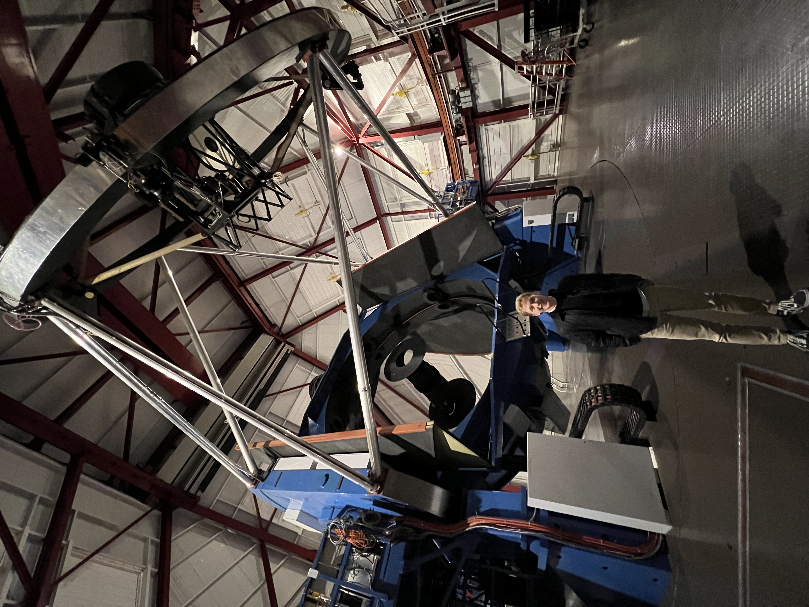

I'm a PhD Candidate in Astronomy & Astrophysics at the University of Chicago. I study the evolution of the universe and, in particular, the galaxies that inhabit it through observations with telescopes across the world. I'm a seasoned observer, and I travel semi-frequently to conduct observations at the Magellan Telescopes in Chile, and I've observed at the Keck Telescopes in Hawaii and the Nordic Optical Telescope at Roque de los Muchcahos Observatory in the Canary Islands.
I earned my B.S. in Astronomy and Physics from the University of Washington in 2022, graduating cum laude with Honors, and received my M.S. in Astronomy & Astrophysics from the University of Chicago in 2024. I'm currently completing my PhD.
My current research focuses on gravitationally lensed wide-separation quasars, which are the most luminous objects in the universe, powered by accretion disks around supermassive black holes. I lead the COOL–LAMPS collaboration's wide-separation lensed quasar discovery team and we have increased the known sample of these extraordinarily rare objects by 25%. I use multi-wavelength spectroscopic observations to analyze the connection between quasars and their host galaxies, gaining insights into galaxy evolution at cosmic noon.
Additionally, I'm collaborating with my team on time-delay cosmography, a technique where we measure time delays between multiple images of lensed quasars to constrain the Hubble constant—the expansion rate of the universe. This work bridges observational astrophysics with cosmology, helping us better understand the large-scale structure and history of the cosmos.
Email: eriksolhaug@uchicago.edu